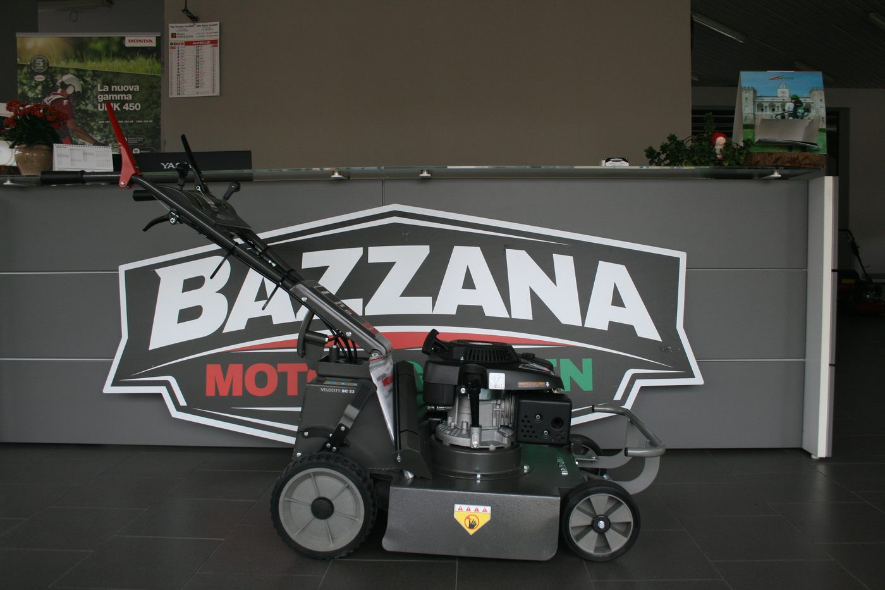
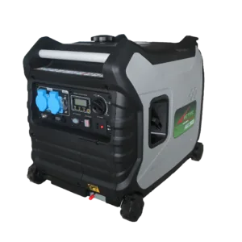
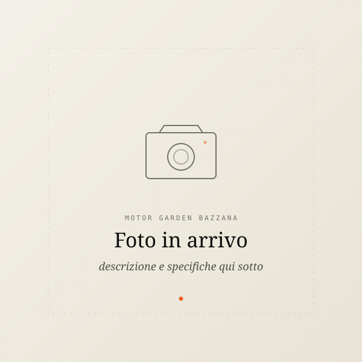
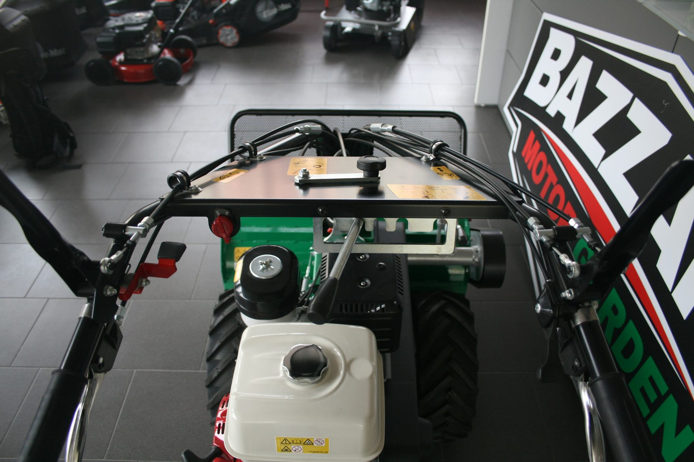
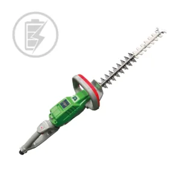
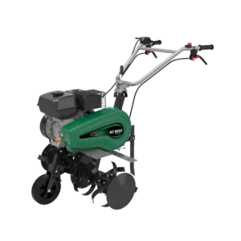
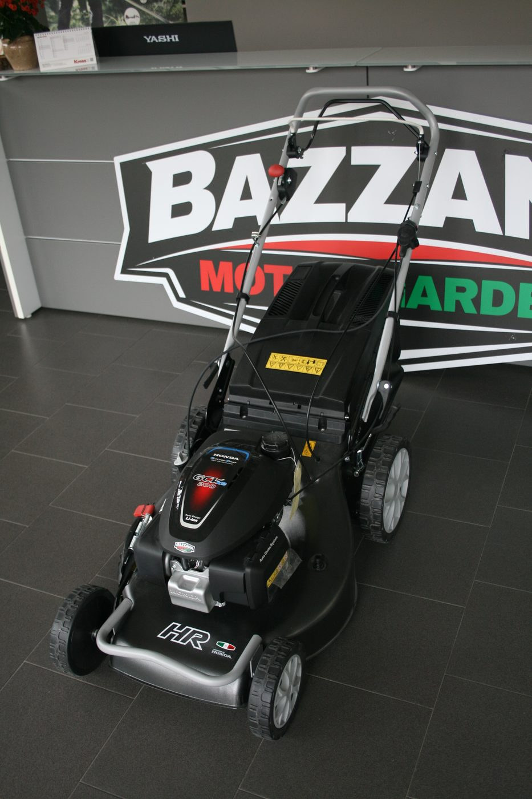

Note dal banco
Blog — guide, manutenzione,
consigli di stagione.
Quello che diciamo al banco ai clienti che ci chiedono "ma quale prendo?", "come faccio a…", "ogni quanto si fa?". Scritto qui, gratis, senza giri di parole.
 Guida acquisto
Guida acquisto
Soffiatore: zaino, a mano, o batteria? — la scelta giusta per ogni uso
Autunno = foglie. Prima di comprare un soffiatore generico, capisci quale formato ti serve per evitare di pentirti dopo la prima ora di lavoro.
Leggi
StagionalitàRimessaggio invernale — come preparare le macchine alla pausa
Una motosega lasciata con la miscela in carburatore per 4 mesi è una motosega che a marzo non parte. Tre operazioni che fanno la differenza fra una stagione e zero.
Leggi Guida acquisto
Guida acquisto
Scegliere la prima motosega — evita gli errori da principiante
Comprare la motosega più potente non sempre è la scelta giusta. Per chi fa legna in proprio, conta più il peso e la lunghezza della spranga. Tre domande prima di entrare in negozio.
Leggi
GeneratoriGeneratore: AVR, inverter, sinusoidale? — quale fa per te
Comprato il generatore sbagliato → laptop bruciato. Le tre tecnologie disponibili e quale serve davvero, a seconda di cosa devi alimentare.
Leggi Manutenzione
Manutenzione
Manutenzione decespugliatore — il filo, la lama, il filtro aria
Il decespugliatore è la macchina che lavoriamo di più in officina perché è quella che tutti usano peggio. Tre controlli che la fanno durare il doppio.
Leggi
MicrocarMicrocar L6e — cosa cambia dal 50cc
Stessa patente AM, stessa età minima, stessi 45 km/h. Ma la microcar è un'auto vera. Il 50cc è un motorino. Le differenze che pesano (e i costi reali).
Leggi
ManutenzioneAffilatura catena motosega — ogni quanto e perché
Una catena affilata taglia in 3 secondi quello che una catena consumata fa in 30. E consuma metà benzina. Quando va fatta, come si capisce, perché farla in officina.
Leggi
Guida acquistoTagliasiepi: benzina o batteria? — pro e contro veri (no marketing)
Le batterie sono migliorate moltissimo. Ma per certi lavori la benzina resta imbattibile. Capisci subito quale fa per te.
Leggi Tagliaerba
Tagliaerba
Trattorino o robot? — quando ha senso uno o l'altro
Due soluzioni completamente diverse per lo stesso problema (un prato grande). Capisci quale fa per te in base a giardino, tempo, budget.
Leggi Guida acquisto
Guida acquisto
Robot tagliaerba — tutto quello che devi sapere prima di comprarlo
Costa quanto 3 rasaerba normali ma ne sostituisce uno. Capisci se ne vale la pena per il tuo giardino — e cosa controllare prima di firmare.
Leggi
Orto e giardinoMotozappa o motocoltivatore? — la differenza che conta
Sembrano la stessa cosa. Non lo sono. Una serve per dissodare l'orto, l'altra per arare a livello pro. Capisci subito quale ti serve.
Leggi
StagionalitàMarzo nel prato — 5 cose da fare a inizio stagione
Il prato che vedi a giugno si decide a marzo. Cinque interventi rapidi che fanno la differenza per tutta la stagione successiva.
Leggi